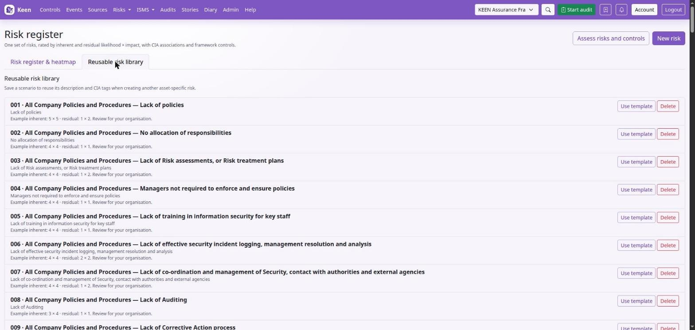
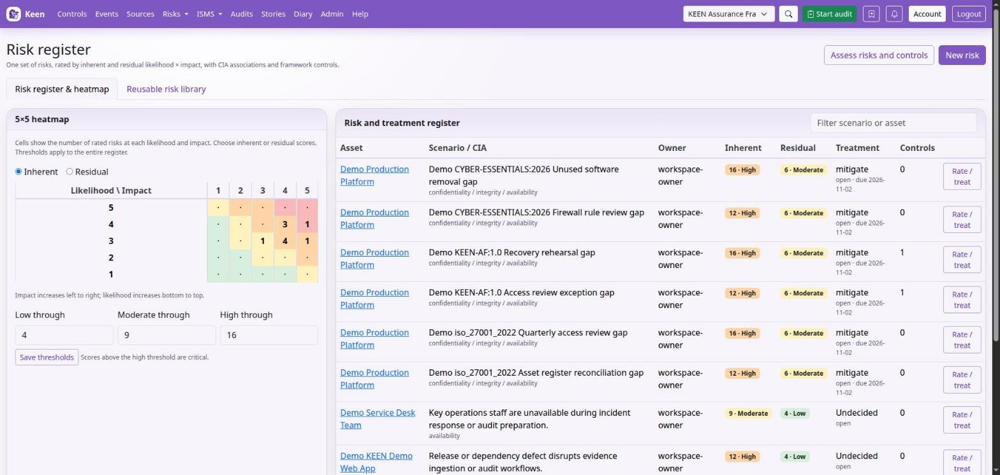
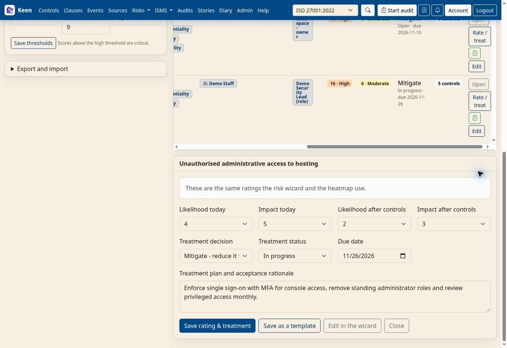
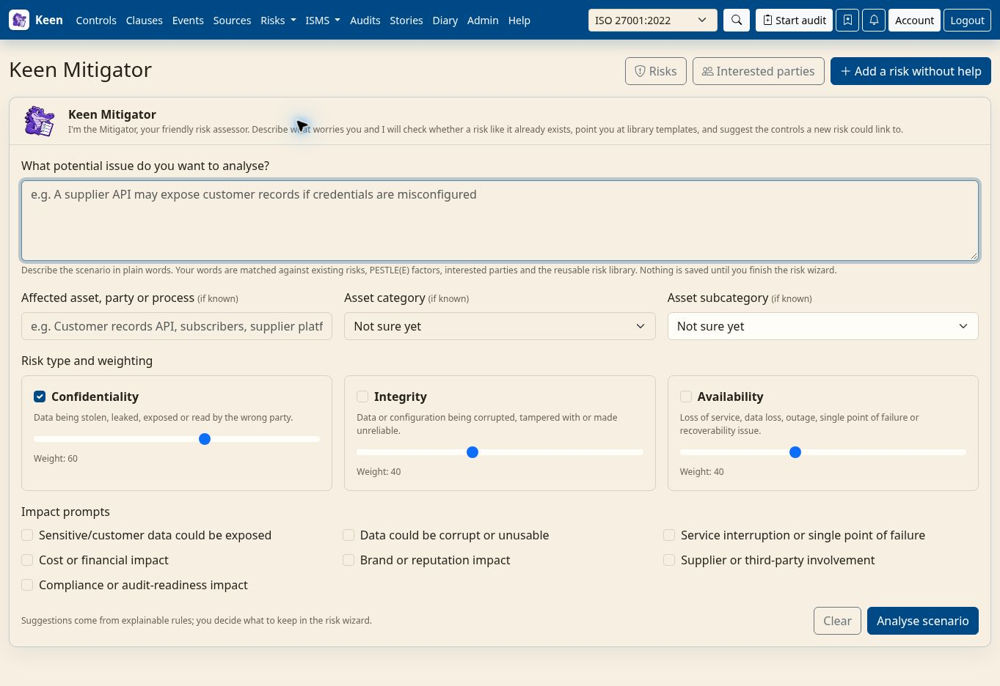

Using Keen
Risks, treatments and ownership
Chapter 7 of 16
Assess and treat risks
This chapter takes one risk from a worry to a treated, owned assessment. It covers the three kinds of risk Keen records, the wizard that creates them, the dashboard and register where they live, the reusable library that gives you a head start, the Mitigator that turns a sentence into suggestions, and ownership by role. You need risk.read to view risks and risk.manage to change them.
- Risk scenario
- A specific threat to a specific asset with a business consequence, such as “ransomware encrypts the file server and backups cannot be restored”.
- Kind of risk
- A simple risk names an asset and what could happen to it. A CIA risk adds which security properties (confidentiality, integrity, availability) the scenario affects. A PESTLE(E) factor is an outside influence (political, economic, social, technological, legal, environmental or ethical) scored for its relevance to business processes and framework clauses.
- Affected parties
- The interested parties, people and vendors a risk affects. A risk can name any mix of the three.
- Inherent and residual
- Likelihood and impact before treatment (the risk today), and after the intended treatment (after controls). Each is rated 1-5 and the score is likelihood × impact.
- Treatment
- What you decide to do about the risk: the strategy, status, plan and due date.
Assess and maintain risks
Keen keeps one set of risk scenarios behind the wizard, the dashboard, the register and the heatmap. A risk carries a name, a description of what could happen, an asset, the parties it affects, optional CIA properties, an owner, inherent and residual ratings, treatment information and controls from any relevant framework. The same taxonomy applies whether a risk began as a simple risk, a CIA risk or a library template.
Risks → Add a risk opens the wizard. It asks for the kind of risk first and then shows only the questions that kind needs, one step at a time: what is affected, who is affected, what could happen, its likelihood and impact, which controls reduce it, and a check before saving. Each step says what it needs and why. Nothing is saved until the last step.
The wizard creates records along the way, so you never leave it to add a prerequisite: type an asset name that does not exist and it is added under the category and subcategory you give; type a party name that is not recorded and it becomes a new interested party with the nature you give. Existing assets, interested parties, people, vendors and business processes are offered as you type.
The Risks dashboard has one tab per view: Risks lists everything with its kind, affected parties, ratings and treatment beside the 5×5 heatmap, where you rate and treat a risk in place, set the severity thresholds, and export or import the register as CSV; CIA risks lists the risks tagged with security properties; PESTLE(E) method lists the external factors; Risk library holds reusable templates for every kind; Visualisations draws risks against controls; and Controls without risks shows coverage gaps. Open a risk to read it in full or to ask questions about it; Edit reopens it in the wizard.
On the Risks tab, the heatmap, the severity thresholds and the CSV export and import share a panel, at the left of the register on a wide screen and above it on a narrow one. Hide panel folds it away so the register has the full width, and Heatmap and import brings it back. Keen remembers the choice in this browser.
Rate the inherent likelihood and impact first, then the residual ratings after the intended treatment. The scales name each step in words (for example “rare” to “almost certain”) so two people reading them arrive at the same number. Record the treatment strategy, status, plan and due date so a lower residual score comes with its explanation.
| Score | Default band |
|---|---|
| 1-4 | Low |
| 5-9 | Moderate |
| 10-16 | High |
| 17-25 | Critical |
Threshold changes apply across the whole register, so agree the scoring method before changing them. An unrated risk is different from a low risk: complete the ratings before you prioritise.
Use the reusable risk library


Open the Risk library tab, or the template list on the wizard's first step. A template holds a scenario of one kind: a risk template supplies the name, description, CIA tags, treatment guidance and an example assessment; a PESTLE(E) template supplies the factor, its type and lens. Choose Use template and the wizard opens with those fields filled in; anything you have already typed is kept and anything the template filled in can be changed before you save.
To contribute a scenario of your own, choose Rate / treat on the risk and then Save as a template. Use a general name and remove customer-specific or personal details first. Reuse always creates an independent assessment.
Going deeper: library templates and KEEN-AF controls
The supplied library integrates with the Keen Assurance Framework. Templates can suggest KEEN-AF control references; when you create the risk, valid remaining references are linked under KEEN-AF:1.0 even if another framework is selected. Links for other frameworks stay separately manageable. Check implementation evidence for each suggested control.
Risk register exchange and the Mitigator
On the Risks tab, under Export and import, Export CSV gives you the register for an external review and the current column headers for an import. Import creates new scenarios only; edit existing records in the wizard.
The Keen Mitigator suggests controls from scenario categories, CIA associations and other assessment inputs. Use its suggestions alongside the library and your own analysis, and remove relationships that do not fit.
Going deeper: import limits
An import accepts up to 1,000 rows and 2 MB, uses the intended framework for control references, and rejects the whole file if any row fails validation. Review ownership, scores and control references before importing, since re-importing the same file duplicates risks.
Use the Risk library tab
On the Risks dashboard, switch to the Risk library tab. The register holds your organisation's assessments; the library offers starting points with threat descriptions, treatment guidance and example assessment information. Filter it by kind to see risk templates or PESTLE(E) templates.
Choose a scenario, review it in the wizard, adapt the asset, parties, owner, likelihood, impact, treatment and proposed control links, and save it into your register. A library suggestion becomes an organisational risk only when you review and save it, and each saved assessment is independent of its template afterwards.
Assess a risk through to treatment


- Open Risks → Add a risk, or choose Use template in the library. Choose the kind of risk: a simple risk, a CIA risk, or a PESTLE(E) factor.
- Pick the asset, or type a new one with its category and subcategory. For a PESTLE(E) factor, pick or add the business processes it touches instead.
- Tick the interested parties, people and vendors the risk affects, or add a new interested party by name and nature. This step can be skipped and completed later.
- Give the risk a short name and describe what could happen and its business consequence. “Cyber risk” on its own names a topic; say what could happen to what. For a CIA risk, tick the security properties it affects; for a PESTLE(E) factor, choose its type, lens and overall relevance.
- Rate likelihood and impact today, then after the intended treatment, using the words beside each scale. Likelihood 4 and impact 5 give an inherent score of 20; 2 × 3 after treatment gives 6. Name the owner and record the treatment strategy, status, plan and due date.
- Tick the controls that reduce the risk. Suggested controls from the Mitigator or a template are pre-ticked and labelled. Out-of-scope controls are labelled too.
- Check the summary, use Change beside anything to go back to its step, and save. Keen says what else it created for you, and offers to open the risk or add another.


Review assessments when assets, threats, vendors, controls or the organisation change. Rate / treat on the Risks tab changes the ratings and treatment of a saved risk without reopening the wizard.
Reusable scenarios and CSV exchange
A template supplies a starting description, CIA tags, treatment guidance and any example ratings; assess your own context before you keep them. Save as a template contributes a generalised scenario from a register risk, and assessments stay independent when their template is later edited or deleted.
For a CSV exchange, export first to get the headers, then import to create new scenarios. Check identifiers, scores, owner details and the framework used for control references before you import.
Use the Mitigator's suggestions
The Keen Mitigator turns a plain-language concern into suggestions you can review. Describe the worry, name the asset, party or process, pick the category, subcategory, CIA associations and impact flags if you know them, and choose Analyse scenario. The mascot turns while the analysis runs; results take a few seconds on a large catalogue.


The results are laid out as three numbered choices, in the order to consider them. 1. Is it already covered? lists existing risks, PESTLE(E) factors and interested parties that use similar words, each with a button to open it, so you can update an existing record and avoid recording the same thing twice. 2. Start from a template lists matching library scenarios with their example ratings and control references. 3. Or create something new shows the makings of a new risk: the safeguards it could link to, labelled framework controls, and the people and parties who might be affected. Matching terms and relevance indicators explain why each candidate appears. Nothing is saved until you reach the last step of the wizard.
- Read the detected signals and check they describe your concern. A keyword match can still be irrelevant, or refer to something already prevented.
- Check the existing matches before creating another assessment. If one is the same thing, open it and update it instead.
- Look at the library candidates and their control references. Use this template opens the wizard with the template and your description filled in.
- Review the suggested controls and untick unsuitable ones. Out-of-scope controls are labelled and keep their current applicability until you edit it.
- Choose Create a new risk in the wizard to carry your description, the asset, the CIA types, the ticked controls and the ticked parties into the wizard, or Record it as a PESTLE(E) factor instead when the concern is an outside influence. Set likelihood and impact yourself and complete the owner and treatment.
Try it with “Our staff use unapproved AI tools”, “Supplier contracts do not protect personal data”, or “We cannot restore our backups after ransomware”. If the matches are too broad, add context.
Going deeper: how the matching works
Analysis runs inside Keen with deterministic, explainable rules and no external AI service. It normalises words and common variants, recognises configured keywords and synonyms, and ranks relevant catalogue entries. It can match negated statements, so confirm each proposed risk against the actual scenario.
In KEEN-AF:1.0 scope the Mitigator also searches the reusable library, shows the matching terms, and uses matching templates' KEEN-AF control references to strengthen its control recommendations, including the extended library's AI risks such as prompt injection, model extraction, unapproved AI tools and excessive agent permissions. Other framework scopes keep framework-specific suggestions without importing KEEN-AF library links. Edits to the library and control catalogue are read on the next analysis.
Risk ownership by organisational role
A risk has one owner, and that owner can be a person or an organisational role, so ownership survives staff changes.
Create roles in the ISMS organisation chart, assign users to them, then choose the role in the wizard's Owner field. Users directly assigned to an owning role see its risks in My risks and get the same risk-specific read and question access as an individual owner. Editing still needs the usual risk-management permission.
Going deeper: membership, exports and deletion
Role membership changes apply on the next access check, and membership of a parent node does not grant ownership of roles below it. Role ownership appears in the register, risk details, control associations and change history; CSV exports keep the role identifier separately from the username. Deleting a role leaves its risks unassigned.